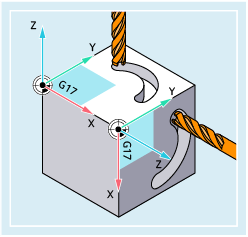
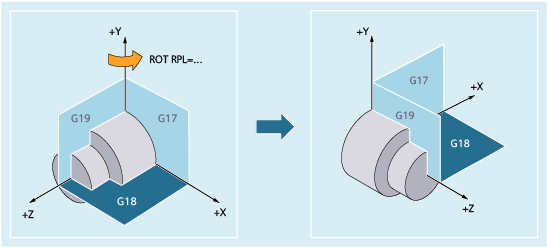

More information
Rotation of the machining plane
For a rotation using ROT/AROT, the machining plane (G17/G18/G19) also rotates.
Example:
The WCS is located on the top surface of the workpiece. Using offset and rotation, the coordinate system is moved to one of the side faces. Machining plane G17 also rotates. In this way, traversing motions can still be programmed in the G17 plane via X and Y and infeeds via Z.
| Note |
The tool must be perpendicular to the machining plane and the positive direction of the infeed axis points in the direction of the tool adapter. Specifying CUT2DF activates the tool radius compensation in the rotated plane. |
Rotation around the axis perpendicular to the machining plane
When programming using RPL=…, the WCS is rotated around the geometry axis perpendicular to the active plane.
Plane change
 | Warning |
WCS rotation remains active after the change of planeIf a change of plane (G17/G18/G19) is programmed after a WCS rotation, the current angles of rotation of the respective axes are retained and are also effective in the new plane. It is therefore strongly recommended that the current angles of rotation be reset to "0" before a plane change:
|